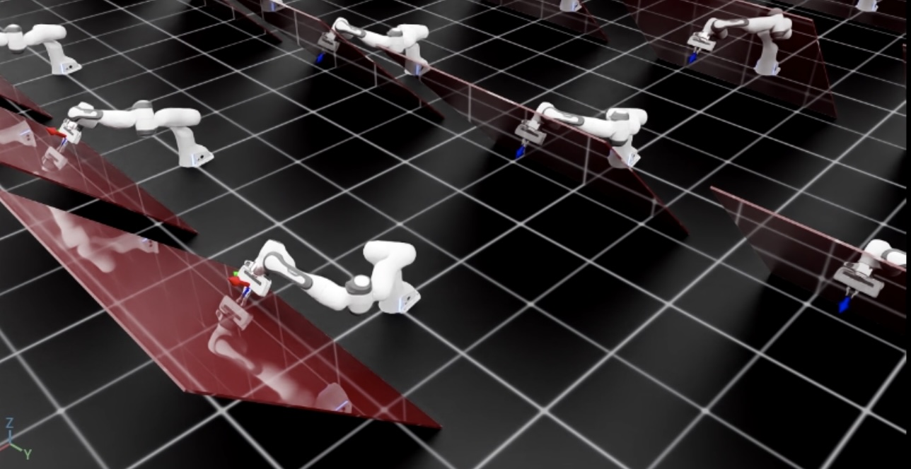

Differential IK Controller 主要用于控制末端执行器 Pose，但某些任务还需要指定误差动态、直接发送关节力矩，或在控制运动的同时沿特定方向施加接触力。此类任务可以使用 Operational Space Controller（OSC）。
有关 Operational Space Control 的理论背景，请参阅下列资料：
哈提卜啊。 Robot 机械臂运动和力控制的统一方法： 作战空间的制定。 IEEE 机器人与自动化杂志，3(1):43–53，1987。URL http://dx.doi.org/10.1109/JRA.1987.1087068.
Robot 动力学讲义，作者：Marco Hutter（苏黎世联邦理工学院）。网址 https://ethz.ch/content/dam/ethz/special-interest/mavt/robotics-n-intelligent-systems/rsl-dam/documents/RobotDynamics2017/RD_HS2017Script.pdf
本教程使用 controllers.OperationalSpaceController 控制 Robot：在垂直于倾斜墙面的方向施加恒定力，同时在其他方向跟踪目标末端执行器 Pose。
1 代码
本教程对应 run_osc.py，位于 scripts/tutorials/05_controllers 目录。
代码 run_osc.py
# Copyright (c) 2022-2026, The Isaac Lab Project Developers (https://github.com/isaac-sim/IsaacLab/blob/main/CONTRIBUTORS.md).
# All rights reserved.
#
# SPDX-License-Identifier: BSD-3-Clause
"""
This script demonstrates how to use the operational space controller (OSC) with the simulator.
The OSC controller can be configured in different modes. It uses the dynamical quantities such as Jacobians and
mass matricescomputed by PhysX.
.. code-block:: bash
# Usage
./isaaclab.sh -p scripts/tutorials/05_controllers/run_osc.py
"""
"""Launch Isaac Sim Simulator first."""
import argparse
from isaaclab.app import AppLauncher
# add argparse arguments
parser = argparse.ArgumentParser(description="Tutorial on using the operational space controller.")
parser.add_argument("--num_envs", type=int, default=128, help="Number of environments to spawn.")
# append AppLauncher cli args
AppLauncher.add_app_launcher_args(parser)
# parse the arguments
args_cli = parser.parse_args()
# launch omniverse app
app_launcher = AppLauncher(args_cli)
simulation_app = app_launcher.app
"""Rest everything follows."""
import torch
import isaaclab.sim as sim_utils
from isaaclab.assets import Articulation, AssetBaseCfg
from isaaclab.controllers import OperationalSpaceController, OperationalSpaceControllerCfg
from isaaclab.markers import VisualizationMarkers
from isaaclab.markers.config import FRAME_MARKER_CFG
from isaaclab.scene import InteractiveScene, InteractiveSceneCfg
from isaaclab.sensors import ContactSensorCfg
from isaaclab.utils import configclass
from isaaclab.utils.math import (
combine_frame_transforms,
matrix_from_quat,
quat_apply_inverse,
quat_inv,
subtract_frame_transforms,
)
##
# Pre-defined configs
##
from isaaclab_assets import FRANKA_PANDA_HIGH_PD_CFG # isort:skip
@configclass
class SceneCfg(InteractiveSceneCfg):
"""Configuration for a simple scene with a tilted wall."""
# ground plane
ground = AssetBaseCfg(
prim_path="/World/defaultGroundPlane",
spawn=sim_utils.GroundPlaneCfg(),
)
# lights
dome_light = AssetBaseCfg(
prim_path="/World/Light", spawn=sim_utils.DomeLightCfg(intensity=3000.0, color=(0.75, 0.75, 0.75))
)
# Tilted wall
tilted_wall = AssetBaseCfg(
prim_path="{ENV_REGEX_NS}/TiltedWall",
spawn=sim_utils.CuboidCfg(
size=(2.0, 1.5, 0.01),
collision_props=sim_utils.CollisionPropertiesCfg(),
visual_material=sim_utils.PreviewSurfaceCfg(diffuse_color=(1.0, 0.0, 0.0), opacity=0.1),
rigid_props=sim_utils.RigidBodyPropertiesCfg(kinematic_enabled=True),
activate_contact_sensors=True,
),
init_state=AssetBaseCfg.InitialStateCfg(
pos=(0.6 + 0.085, 0.0, 0.3), rot=(0.9238795325, 0.0, -0.3826834324, 0.0)
),
)
contact_forces = ContactSensorCfg(
prim_path="/World/envs/env_.*/TiltedWall",
update_period=0.0,
history_length=2,
debug_vis=False,
)
robot = FRANKA_PANDA_HIGH_PD_CFG.replace(prim_path="{ENV_REGEX_NS}/Robot")
robot.actuators["panda_shoulder"].stiffness = 0.0
robot.actuators["panda_shoulder"].damping = 0.0
robot.actuators["panda_forearm"].stiffness = 0.0
robot.actuators["panda_forearm"].damping = 0.0
robot.spawn.rigid_props.disable_gravity = True
def run_simulator(sim: sim_utils.SimulationContext, scene: InteractiveScene):
"""Runs the simulation loop.
Args:
sim: (SimulationContext) Simulation context.
scene: (InteractiveScene) Interactive scene.
"""
# Extract scene entities for readability.
robot = scene["robot"]
contact_forces = scene["contact_forces"]
# Obtain indices for the end-effector and arm joints
ee_frame_name = "panda_leftfinger"
arm_joint_names = ["panda_joint.*"]
ee_frame_idx = robot.find_bodies(ee_frame_name)[0][0]
arm_joint_ids = robot.find_joints(arm_joint_names)[0]
# Create the OSC
osc_cfg = OperationalSpaceControllerCfg(
target_types=["pose_abs", "wrench_abs"],
impedance_mode="variable_kp",
inertial_dynamics_decoupling=True,
partial_inertial_dynamics_decoupling=False,
gravity_compensation=False,
motion_damping_ratio_task=1.0,
contact_wrench_stiffness_task=[0.0, 0.0, 0.1, 0.0, 0.0, 0.0],
motion_control_axes_task=[1, 1, 0, 1, 1, 1],
contact_wrench_control_axes_task=[0, 0, 1, 0, 0, 0],
nullspace_control="position",
)
osc = OperationalSpaceController(osc_cfg, num_envs=scene.num_envs, device=sim.device)
# Markers
frame_marker_cfg = FRAME_MARKER_CFG.copy()
frame_marker_cfg.markers["frame"].scale = (0.1, 0.1, 0.1)
ee_marker = VisualizationMarkers(frame_marker_cfg.replace(prim_path="/Visuals/ee_current"))
goal_marker = VisualizationMarkers(frame_marker_cfg.replace(prim_path="/Visuals/ee_goal"))
# Define targets for the arm
ee_goal_pose_set_tilted_b = torch.tensor(
[
[0.6, 0.15, 0.3, 0.0, 0.92387953, 0.0, 0.38268343],
[0.6, -0.3, 0.3, 0.0, 0.92387953, 0.0, 0.38268343],
[0.8, 0.0, 0.5, 0.0, 0.92387953, 0.0, 0.38268343],
],
device=sim.device,
)
ee_goal_wrench_set_tilted_task = torch.tensor(
[
[0.0, 0.0, 10.0, 0.0, 0.0, 0.0],
[0.0, 0.0, 10.0, 0.0, 0.0, 0.0],
[0.0, 0.0, 10.0, 0.0, 0.0, 0.0],
],
device=sim.device,
)
kp_set_task = torch.tensor(
[
[360.0, 360.0, 360.0, 360.0, 360.0, 360.0],
[420.0, 420.0, 420.0, 420.0, 420.0, 420.0],
[320.0, 320.0, 320.0, 320.0, 320.0, 320.0],
],
device=sim.device,
)
ee_target_set = torch.cat([ee_goal_pose_set_tilted_b, ee_goal_wrench_set_tilted_task, kp_set_task], dim=-1)
# Define simulation stepping
sim_dt = sim.get_physics_dt()
# Update existing buffers
# Note: We need to update buffers before the first step for the controller.
robot.update(dt=sim_dt)
# Get the center of the robot soft joint limits
joint_centers = torch.mean(robot.data.soft_joint_pos_limits[:, arm_joint_ids, :], dim=-1)
# get the updated states
(
jacobian_b,
mass_matrix,
gravity,
ee_pose_b,
ee_vel_b,
root_pose_w,
ee_pose_w,
ee_force_b,
joint_pos,
joint_vel,
) = update_states(sim, scene, robot, ee_frame_idx, arm_joint_ids, contact_forces)
# Track the given target command
current_goal_idx = 0 # Current goal index for the arm
command = torch.zeros(
scene.num_envs, osc.action_dim, device=sim.device
) # Generic target command, which can be pose, position, force, etc.
ee_target_pose_b = torch.zeros(scene.num_envs, 7, device=sim.device) # Target pose in the body frame
ee_target_pose_w = torch.zeros(scene.num_envs, 7, device=sim.device) # Target pose in the world frame (for marker)
# Set joint efforts to zero
zero_joint_efforts = torch.zeros(scene.num_envs, robot.num_joints, device=sim.device)
joint_efforts = torch.zeros(scene.num_envs, len(arm_joint_ids), device=sim.device)
count = 0
# Simulation loop
while simulation_app.is_running():
# reset every 500 steps
if count % 500 == 0:
# reset joint state to default
default_joint_pos = robot.data.default_joint_pos.clone()
default_joint_vel = robot.data.default_joint_vel.clone()
robot.write_joint_state_to_sim(default_joint_pos, default_joint_vel)
robot.set_joint_effort_target(zero_joint_efforts) # Set zero torques in the initial step
robot.write_data_to_sim()
robot.reset()
# reset contact sensor
contact_forces.reset()
# reset target pose
robot.update(sim_dt)
_, _, _, ee_pose_b, _, _, _, _, _, _ = update_states(
sim, scene, robot, ee_frame_idx, arm_joint_ids, contact_forces
) # at reset, the jacobians are not updated to the latest state
command, ee_target_pose_b, ee_target_pose_w, current_goal_idx = update_target(
sim, scene, osc, root_pose_w, ee_target_set, current_goal_idx
)
# set the osc command
osc.reset()
command, task_frame_pose_b = convert_to_task_frame(osc, command=command, ee_target_pose_b=ee_target_pose_b)
osc.set_command(command=command, current_ee_pose_b=ee_pose_b, current_task_frame_pose_b=task_frame_pose_b)
else:
# get the updated states
(
jacobian_b,
mass_matrix,
gravity,
ee_pose_b,
ee_vel_b,
root_pose_w,
ee_pose_w,
ee_force_b,
joint_pos,
joint_vel,
) = update_states(sim, scene, robot, ee_frame_idx, arm_joint_ids, contact_forces)
# compute the joint commands
joint_efforts = osc.compute(
jacobian_b=jacobian_b,
current_ee_pose_b=ee_pose_b,
current_ee_vel_b=ee_vel_b,
current_ee_force_b=ee_force_b,
mass_matrix=mass_matrix,
gravity=gravity,
current_joint_pos=joint_pos,
current_joint_vel=joint_vel,
nullspace_joint_pos_target=joint_centers,
)
# apply actions
robot.set_joint_effort_target(joint_efforts, joint_ids=arm_joint_ids)
robot.write_data_to_sim()
# update marker positions
ee_marker.visualize(ee_pose_w[:, 0:3], ee_pose_w[:, 3:7])
goal_marker.visualize(ee_target_pose_w[:, 0:3], ee_target_pose_w[:, 3:7])
# perform step
sim.step(render=True)
# update robot buffers
robot.update(sim_dt)
# update buffers
scene.update(sim_dt)
# update sim-time
count += 1
# Update robot states
def update_states(
sim: sim_utils.SimulationContext,
scene: InteractiveScene,
robot: Articulation,
ee_frame_idx: int,
arm_joint_ids: list[int],
contact_forces,
):
"""Update the robot states.
Args:
sim: (SimulationContext) Simulation context.
scene: (InteractiveScene) Interactive scene.
robot: (Articulation) Robot articulation.
ee_frame_idx: (int) End-effector frame index.
arm_joint_ids: (list[int]) Arm joint indices.
contact_forces: (ContactSensor) Contact sensor.
Returns:
jacobian_b (torch.tensor): Jacobian in the body frame.
mass_matrix (torch.tensor): Mass matrix.
gravity (torch.tensor): Gravity vector.
ee_pose_b (torch.tensor): End-effector pose in the body frame.
ee_vel_b (torch.tensor): End-effector velocity in the body frame.
root_pose_w (torch.tensor): Root pose in the world frame.
ee_pose_w (torch.tensor): End-effector pose in the world frame.
ee_force_b (torch.tensor): End-effector force in the body frame.
joint_pos (torch.tensor): The joint positions.
joint_vel (torch.tensor): The joint velocities.
Raises:
ValueError: Undefined target_type.
"""
# obtain dynamics related quantities from simulation
ee_jacobi_idx = ee_frame_idx - 1
jacobian_w = robot.root_physx_view.get_jacobians()[:, ee_jacobi_idx, :, arm_joint_ids]
mass_matrix = robot.root_physx_view.get_generalized_mass_matrices()[:, arm_joint_ids, :][:, :, arm_joint_ids]
gravity = robot.root_physx_view.get_gravity_compensation_forces()[:, arm_joint_ids]
# Convert the Jacobian from world to root frame
jacobian_b = jacobian_w.clone()
root_rot_matrix = matrix_from_quat(quat_inv(robot.data.root_quat_w))
jacobian_b[:, :3, :] = torch.bmm(root_rot_matrix, jacobian_b[:, :3, :])
jacobian_b[:, 3:, :] = torch.bmm(root_rot_matrix, jacobian_b[:, 3:, :])
# Compute current pose of the end-effector
root_pos_w = robot.data.root_pos_w
root_quat_w = robot.data.root_quat_w
ee_pos_w = robot.data.body_pos_w[:, ee_frame_idx]
ee_quat_w = robot.data.body_quat_w[:, ee_frame_idx]
ee_pos_b, ee_quat_b = subtract_frame_transforms(root_pos_w, root_quat_w, ee_pos_w, ee_quat_w)
root_pose_w = torch.cat([root_pos_w, root_quat_w], dim=-1)
ee_pose_w = torch.cat([ee_pos_w, ee_quat_w], dim=-1)
ee_pose_b = torch.cat([ee_pos_b, ee_quat_b], dim=-1)
# Compute the current velocity of the end-effector
ee_vel_w = robot.data.body_vel_w[:, ee_frame_idx, :] # Extract end-effector velocity in the world frame
root_vel_w = robot.data.root_vel_w # Extract root velocity in the world frame
relative_vel_w = ee_vel_w - root_vel_w # Compute the relative velocity in the world frame
ee_lin_vel_b = quat_apply_inverse(robot.data.root_quat_w, relative_vel_w[:, 0:3]) # From world to root frame
ee_ang_vel_b = quat_apply_inverse(robot.data.root_quat_w, relative_vel_w[:, 3:6])
ee_vel_b = torch.cat([ee_lin_vel_b, ee_ang_vel_b], dim=-1)
# Calculate the contact force
ee_force_w = torch.zeros(scene.num_envs, 3, device=sim.device)
sim_dt = sim.get_physics_dt()
contact_forces.update(sim_dt) # update contact sensor
# Calculate the contact force by averaging over last four time steps (i.e., to smoothen) and
# taking the max of three surfaces as only one should be the contact of interest
ee_force_w, _ = torch.max(torch.mean(contact_forces.data.net_forces_w_history, dim=1), dim=1)
# This is a simplification, only for the sake of testing.
ee_force_b = ee_force_w
# Get joint positions and velocities
joint_pos = robot.data.joint_pos[:, arm_joint_ids]
joint_vel = robot.data.joint_vel[:, arm_joint_ids]
return (
jacobian_b,
mass_matrix,
gravity,
ee_pose_b,
ee_vel_b,
root_pose_w,
ee_pose_w,
ee_force_b,
joint_pos,
joint_vel,
)
# Update the target commands
def update_target(
sim: sim_utils.SimulationContext,
scene: InteractiveScene,
osc: OperationalSpaceController,
root_pose_w: torch.tensor,
ee_target_set: torch.tensor,
current_goal_idx: int,
):
"""Update the targets for the operational space controller.
Args:
sim: (SimulationContext) Simulation context.
scene: (InteractiveScene) Interactive scene.
osc: (OperationalSpaceController) Operational space controller.
root_pose_w: (torch.tensor) Root pose in the world frame.
ee_target_set: (torch.tensor) End-effector target set.
current_goal_idx: (int) Current goal index.
Returns:
command (torch.tensor): Updated target command.
ee_target_pose_b (torch.tensor): Updated target pose in the body frame.
ee_target_pose_w (torch.tensor): Updated target pose in the world frame.
next_goal_idx (int): Next goal index.
Raises:
ValueError: Undefined target_type.
"""
# update the ee desired command
command = torch.zeros(scene.num_envs, osc.action_dim, device=sim.device)
command[:] = ee_target_set[current_goal_idx]
# update the ee desired pose
ee_target_pose_b = torch.zeros(scene.num_envs, 7, device=sim.device)
for target_type in osc.cfg.target_types:
if target_type == "pose_abs":
ee_target_pose_b[:] = command[:, :7]
elif target_type == "wrench_abs":
pass # ee_target_pose_b could stay at the root frame for force control, what matters is ee_target_b
else:
raise ValueError("Undefined target_type within update_target().")
# update the target desired pose in world frame (for marker)
ee_target_pos_w, ee_target_quat_w = combine_frame_transforms(
root_pose_w[:, 0:3], root_pose_w[:, 3:7], ee_target_pose_b[:, 0:3], ee_target_pose_b[:, 3:7]
)
ee_target_pose_w = torch.cat([ee_target_pos_w, ee_target_quat_w], dim=-1)
next_goal_idx = (current_goal_idx + 1) % len(ee_target_set)
return command, ee_target_pose_b, ee_target_pose_w, next_goal_idx
# Convert the target commands to the task frame
def convert_to_task_frame(osc: OperationalSpaceController, command: torch.tensor, ee_target_pose_b: torch.tensor):
"""Converts the target commands to the task frame.
Args:
osc: OperationalSpaceController object.
command: Command to be converted.
ee_target_pose_b: Target pose in the body frame.
Returns:
command (torch.tensor): Target command in the task frame.
task_frame_pose_b (torch.tensor): Target pose in the task frame.
Raises:
ValueError: Undefined target_type.
"""
command = command.clone()
task_frame_pose_b = ee_target_pose_b.clone()
cmd_idx = 0
for target_type in osc.cfg.target_types:
if target_type == "pose_abs":
command[:, :3], command[:, 3:7] = subtract_frame_transforms(
task_frame_pose_b[:, :3], task_frame_pose_b[:, 3:], command[:, :3], command[:, 3:7]
)
cmd_idx += 7
elif target_type == "wrench_abs":
# These are already defined in target frame for ee_goal_wrench_set_tilted_task (since it is
# easier), so not transforming
cmd_idx += 6
else:
raise ValueError("Undefined target_type within _convert_to_task_frame().")
return command, task_frame_pose_b
def main():
"""Main function."""
# Load kit helper
sim_cfg = sim_utils.SimulationCfg(dt=0.01, device=args_cli.device)
sim = sim_utils.SimulationContext(sim_cfg)
# Set main camera
sim.set_camera_view([2.5, 2.5, 2.5], [0.0, 0.0, 0.0])
# Design scene
scene_cfg = SceneCfg(num_envs=args_cli.num_envs, env_spacing=2.0)
scene = InteractiveScene(scene_cfg)
# Play the simulator
sim.reset()
# Now we are ready!
print("[INFO]: Setup complete...")
# Run the simulator
run_simulator(sim, scene)
if __name__ == "__main__":
# run the main function
main()
# close sim app
simulation_app.close()
1.1 创建 Operational Space Controller
OperationalSpaceController 计算关节 Effort 或 Torque，使 Robot 能够在 Task Space 中同时执行 Motion Control 和 Force Control。
Task Frame 可以是欧氏空间中的任意 Coordinate Frame，默认使用 Robot Base Frame。若在其他 Frame 中定义目标更方便，可通过 set_command() 的 current_task_frame_pose_b 参数提供 Task Frame 相对 Robot Base Frame 的 Pose。本教程把与墙面平行的 Frame 作为 Task Frame，这样接触力只需沿该 Frame 的 z 轴指定。OperationalSpaceControllerCfg 中的相关参数都应按此 Task Frame 理解。
Motion Target 可以是相对 Robot Base 的 Absolute Pose（target_types: "pose_abs"），也可以是相对当前末端执行器 Pose 的 Relative Pose（target_types: "pose_rel"）。Force Target 使用 Absolute Wrench（target_types: "force_abs"）。同时控制 Pose 和 Force 时，target_types 可设为 ["pose_abs", "wrench_abs"] 或 ["pose_rel", "wrench_abs"]。
motion_control_axes_task 和 force_control_axes_task 分别指定 Motion Control 与 Force Control 所作用的轴。两个列表各包含六个 0 或 1，对应三条平移轴和三条旋转轴，并且必须互补。
Motion Control 的 Stiffness 和 Damping Ratio 分别由 motion_control_stiffness 和 motion_damping_ratio_task 指定，可以是对所有轴生效的标量，也可以是六元素列表。若希望把这些值作为 Command 的一部分，可将 impedance_mode 设为 "variable_kp" 或 "variable"，并通过相应的 motion_stiffness_limits_task 和 motion_damping_limits_task 约束取值范围。
Contact Force 可以采用 Open-Loop Control，也可以设置 contact_wrench_stiffness_task，使用包含 Feedforward Term 的 Closed-Loop Control。目前 Contact Sensor 只能测量线性 Contact Wrench，因此闭环控制只使用该参数的前三个元素。
将 inertial_dynamics_decoupling 设为 True，可利用 Robot Inertia Matrix 解耦 Task Space Acceleration，这对快速运动的控制精度尤其重要。若将 partial_inertial_dynamics_decoupling 设为 True，则忽略平移轴和旋转轴之间的惯性耦合。
如需在 Operational Space Command 中加入 Gravity Compensation，可将 gravity_compensation 设为 True。
冗余 Robot 还需要考虑 Null Space Control。Null Space 中的关节运动不会改变 Task Space Coordinate；如果不加约束，关节可能漂移甚至接近 Limit。将 nullspace_control 设为 "position" 可启用 Null-Space PD Controller，并通过 nullspace_stiffness 和 nullspace_damping_ratio 调整其行为。只有启用完整 Inertial Dynamics Decoupling（即相关选项不是 False）时，Null Space 与 Task Space 才能在理论上完全解耦；默认控制模式为 "none"。
该 OSC 实现使用 PyTorch，以 Batch 形式完成计算。
本教程用 "pose_abs" 控制除 z 轴外的 Motion，用 "wrench_abs" 控制 z 轴 Force；启用完整 Inertial Decoupling，但不启用 Gravity Compensation，因为 Robot Configuration 已关闭 Gravity。Impedance Mode 设为 "variable_kp"，Null-Space Control 设为 "position"，目标关节 Position 取关节 Limit 的中点。
# Create the OSC
osc_cfg = OperationalSpaceControllerCfg(
target_types=["pose_abs", "wrench_abs"],
impedance_mode="variable_kp",
inertial_dynamics_decoupling=True,
partial_inertial_dynamics_decoupling=False,
gravity_compensation=False,
motion_damping_ratio_task=1.0,
contact_wrench_stiffness_task=[0.0, 0.0, 0.1, 0.0, 0.0, 0.0],
motion_control_axes_task=[1, 1, 0, 1, 1, 1],
contact_wrench_control_axes_task=[0, 0, 1, 0, 0, 0],
nullspace_control="position",
)
osc = OperationalSpaceController(osc_cfg, num_envs=scene.num_envs, device=sim.device)
1.2 更新 Robot 的状态
OSC 只负责计算，因此用户必须提供 Robot 的 Jacobian Matrix、Mass/Inertia Matrix、末端执行器 Pose 和 Velocity、Contact Force，以及关节 Position 和 Velocity；这些量都使用 Root Frame。若启用相应功能，还需提供 Gravity Compensation Vector 和 Null-Space Joint Position Target。
# Update robot states
def update_states(
sim: sim_utils.SimulationContext,
scene: InteractiveScene,
robot: Articulation,
ee_frame_idx: int,
arm_joint_ids: list[int],
contact_forces,
):
"""Update the robot states.
Args:
sim: (SimulationContext) Simulation context.
scene: (InteractiveScene) Interactive scene.
robot: (Articulation) Robot articulation.
ee_frame_idx: (int) End-effector frame index.
arm_joint_ids: (list[int]) Arm joint indices.
contact_forces: (ContactSensor) Contact sensor.
Returns:
jacobian_b (torch.tensor): Jacobian in the body frame.
mass_matrix (torch.tensor): Mass matrix.
gravity (torch.tensor): Gravity vector.
ee_pose_b (torch.tensor): End-effector pose in the body frame.
ee_vel_b (torch.tensor): End-effector velocity in the body frame.
root_pose_w (torch.tensor): Root pose in the world frame.
ee_pose_w (torch.tensor): End-effector pose in the world frame.
ee_force_b (torch.tensor): End-effector force in the body frame.
joint_pos (torch.tensor): The joint positions.
joint_vel (torch.tensor): The joint velocities.
Raises:
ValueError: Undefined target_type.
"""
# obtain dynamics related quantities from simulation
ee_jacobi_idx = ee_frame_idx - 1
jacobian_w = robot.root_physx_view.get_jacobians()[:, ee_jacobi_idx, :, arm_joint_ids]
mass_matrix = robot.root_physx_view.get_generalized_mass_matrices()[:, arm_joint_ids, :][:, :, arm_joint_ids]
gravity = robot.root_physx_view.get_gravity_compensation_forces()[:, arm_joint_ids]
# Convert the Jacobian from world to root frame
jacobian_b = jacobian_w.clone()
root_rot_matrix = matrix_from_quat(quat_inv(robot.data.root_quat_w))
jacobian_b[:, :3, :] = torch.bmm(root_rot_matrix, jacobian_b[:, :3, :])
jacobian_b[:, 3:, :] = torch.bmm(root_rot_matrix, jacobian_b[:, 3:, :])
# Compute current pose of the end-effector
root_pos_w = robot.data.root_pos_w
root_quat_w = robot.data.root_quat_w
ee_pos_w = robot.data.body_pos_w[:, ee_frame_idx]
ee_quat_w = robot.data.body_quat_w[:, ee_frame_idx]
ee_pos_b, ee_quat_b = subtract_frame_transforms(root_pos_w, root_quat_w, ee_pos_w, ee_quat_w)
root_pose_w = torch.cat([root_pos_w, root_quat_w], dim=-1)
ee_pose_w = torch.cat([ee_pos_w, ee_quat_w], dim=-1)
ee_pose_b = torch.cat([ee_pos_b, ee_quat_b], dim=-1)
# Compute the current velocity of the end-effector
ee_vel_w = robot.data.body_vel_w[:, ee_frame_idx, :] # Extract end-effector velocity in the world frame
root_vel_w = robot.data.root_vel_w # Extract root velocity in the world frame
relative_vel_w = ee_vel_w - root_vel_w # Compute the relative velocity in the world frame
ee_lin_vel_b = quat_apply_inverse(robot.data.root_quat_w, relative_vel_w[:, 0:3]) # From world to root frame
ee_ang_vel_b = quat_apply_inverse(robot.data.root_quat_w, relative_vel_w[:, 3:6])
ee_vel_b = torch.cat([ee_lin_vel_b, ee_ang_vel_b], dim=-1)
# Calculate the contact force
ee_force_w = torch.zeros(scene.num_envs, 3, device=sim.device)
sim_dt = sim.get_physics_dt()
contact_forces.update(sim_dt) # update contact sensor
# Calculate the contact force by averaging over last four time steps (i.e., to smoothen) and
# taking the max of three surfaces as only one should be the contact of interest
ee_force_w, _ = torch.max(torch.mean(contact_forces.data.net_forces_w_history, dim=1), dim=1)
# This is a simplification, only for the sake of testing.
ee_force_b = ee_force_w
# Get joint positions and velocities
joint_pos = robot.data.joint_pos[:, arm_joint_ids]
joint_vel = robot.data.joint_vel[:, arm_joint_ids]
return (
jacobian_b,
mass_matrix,
gravity,
ee_pose_b,
ee_vel_b,
root_pose_w,
ee_pose_w,
ee_force_b,
joint_pos,
joint_vel,
)
1.3 计算 Robot Command
OSC 将设置目标 Command 与计算关节 Effort 分开。Command Vector 按 target_types 中的顺序包含各目标；当 impedance_mode 为 "variable_kp" 或 "variable" 时，还需附加 Stiffness 和 Damping Ratio。所有值都应位于同一 Task Frame，并按顺序拼接；代码以 _task 下标标识这些量。
本教程先在 Task Frame 中定义目标 Wrench，再将目标 Pose 转换到 Task Frame：
# Convert the target commands to the task frame
def convert_to_task_frame(osc: OperationalSpaceController, command: torch.tensor, ee_target_pose_b: torch.tensor):
"""Converts the target commands to the task frame.
Args:
osc: OperationalSpaceController object.
command: Command to be converted.
ee_target_pose_b: Target pose in the body frame.
Returns:
command (torch.tensor): Target command in the task frame.
task_frame_pose_b (torch.tensor): Target pose in the task frame.
Raises:
ValueError: Undefined target_type.
"""
command = command.clone()
task_frame_pose_b = ee_target_pose_b.clone()
cmd_idx = 0
for target_type in osc.cfg.target_types:
if target_type == "pose_abs":
command[:, :3], command[:, 3:7] = subtract_frame_transforms(
task_frame_pose_b[:, :3], task_frame_pose_b[:, 3:], command[:, :3], command[:, 3:7]
)
cmd_idx += 7
elif target_type == "wrench_abs":
# These are already defined in target frame for ee_goal_wrench_set_tilted_task (since it is
# easier), so not transforming
cmd_idx += 6
else:
raise ValueError("Undefined target_type within _convert_to_task_frame().")
return command, task_frame_pose_b
随后调用 OSC，传入 Task Frame 中的 Command Vector、Base Frame 中的末端执行器 Pose，以及 Task Frame 相对 Base Frame 的 Pose。OSC 内部会在 Base Frame 中完成计算。
# set the osc command
osc.reset()
command, task_frame_pose_b = convert_to_task_frame(osc, command=command, ee_target_pose_b=ee_target_pose_b)
osc.set_command(command=command, current_ee_pose_b=ee_pose_b, current_task_frame_pose_b=task_frame_pose_b)
根据 Robot 状态和目标 Command 计算关节 Effort 或 Torque：
# compute the joint commands
joint_efforts = osc.compute(
jacobian_b=jacobian_b,
current_ee_pose_b=ee_pose_b,
current_ee_vel_b=ee_vel_b,
current_ee_force_b=ee_force_b,
mass_matrix=mass_matrix,
gravity=gravity,
current_joint_pos=joint_pos,
current_joint_vel=joint_vel,
nullspace_joint_pos_target=joint_centers,
)
最后将计算得到的关节 Effort 或 Torque 目标发送给 Robot。
# apply actions
robot.set_joint_effort_target(joint_efforts, joint_ids=arm_joint_ids)
robot.write_data_to_sim()
2 代码执行
您现在可以运行 Script 并查看结果：
./isaaclab.sh -p scripts/tutorials/05_controllers/run_osc.py --num_envs 128
Script 将以 128 Robots 启动 Simulation。 Robots 将使用 OSC 进行控制。 除红色倾斜墙外，还应使用框架标记显示当前和所需的末端执行器 Poses。 您应该看到 Robot 达到所需的 Pose，同时施加垂直于墙壁的恒定力 表面。

要停止 Simulation，您可以关闭窗口或按 Ctrl+C 在 Terminal 中。